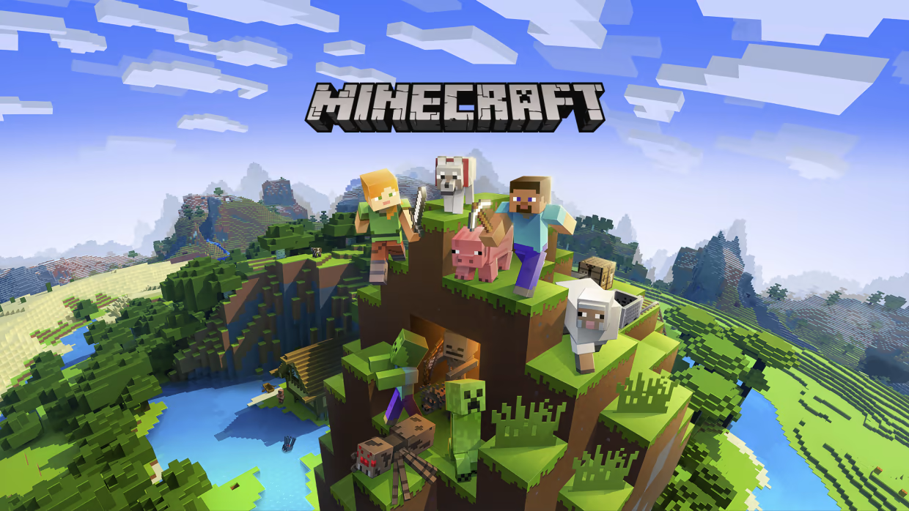

Minecraft Java Edition
Using a pirated client (T launcher) you can play the one and only Blocky Sandbox, This game can barely run on school computers so you will have to download the "Light Craft" modpack (Using Psiphon3).

Lethal Company
(My own Files) You are a contracted worker for the Company. Your job is to collect scrap from abandoned, industrialized moons to meet the Company's profit quota.

Stick Fight The Game
(My own files) A physics-based fighting game where you battle it out as stick figures with many weapons and guns.

Counter-Strike Source
An objective-based, multiplayer tactical first-person shooter. Two opposing teams—the Terrorists and the Counter Terrorists—compete in game modes to complete objectives, such as securing a location to plant or defuse a bomb and rescuing or guarding hostages.

Counter-Strike 1.6
The original objective-based, 2004 multiplayer tactical first-person shooter which was initially released as a modification for the 1998 Half-Life. Two opposing teams—the Terrorists and the Counter Terrorists—compete in game modes to complete objectives.

Just Act Natural
(My own files) A hand-crafted online party game where players must hide among NPC characters to avoid detection from the seeker.

Half-Life 2 Deathmatch
(My own files) The game is simple, the player must kill other players to score points using the Half-Life 2 weapons.

Day Of Defeat Source
(My own files) A WWII-themed game powered by the award-winning Source engine. This team-based multiplayer game allows players to join the Axis or Allied forces as a unique player class.